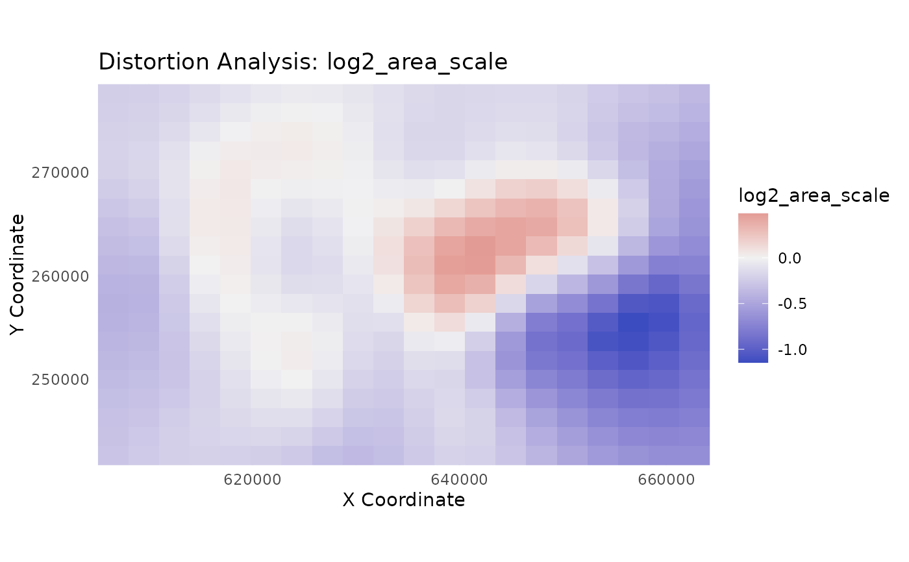

swiss_cps.RdA dataset of 343 Control Points (CPs) based on the sample dataset from the MapAnalyst distortion analysis software. It's ideal for analyzing complex, non-linear distortions.
swiss_cpsAn sf data frame with 300 rows (points) and 7 columns:
Numeric. The X-coordinate on the source map (already globally aligned).
Numeric. The Y-coordinate on the source map (already globally aligned).
Numeric. The X-coordinate on the reference map.
Numeric. The Y-coordinate on the reference map.
Numeric. The residual difference in X (target_x - source_x).
Numeric. The residual difference in Y (target_y - source_y).
sfc_POINT. The sf point geometry representing the source_x
and source_y locations in the Swiss CH1903 / LV03 coordinate system (EPSG:21781).
Data originally provided as a sample dataset for the MapAnalyst distortion analysis software. See http://mapanalyst.cartography.ch.
This dataset is derived from the sample data provided with the MapAnalyst software (http://mapanalyst.cartography.ch).
The defining characteristic of this dataset is that the source coordinates
(source_x, source_y) have already been globally aligned to the target
coordinates using a Helmert transformation. The remaining differences (dx, dy)
therefore represent the complex, non-linear residual distortions.
This makes the dataset an excellent test case for evaluating the ability of
models like gam and rf to model and correct these challenging error patterns,
which a simple helmert or lm model would not be able to address.
# This example demonstrates a powerful use case for the swiss_cps dataset:
# 1. Load the data.
# 2. Train a GAM model to learn the complex, non-linear residual errors.
# 3. Visualize the learned distortion surface.
library(mapAI)
library(sf)
#> Linking to GEOS 3.12.1, GDAL 3.8.4, PROJ 9.4.0; sf_use_s2() is TRUE
# Load the dataset
data(swiss_cps)
# Train a GAM model. It will learn the non-linear patterns that remain
# after the initial Helmert alignment.
gam_model <- train_pai_model(swiss_cps, method = "gam")
#> Training 'gam' model...
# Analyze the distortion on a regular grid of points
analysis_grid <- sf::st_make_grid(swiss_cps, n = c(20, 20)) %>%
sf::st_centroid() %>%
sf::st_sf()
distortion_results <- analyze_distortion(gam_model, analysis_grid)
#> Calculating distortion metrics for gam model...
#> Finalizing metrics from derivatives...
#> Distortion analysis complete.
# Plot the learned 'log2_area_scale'. This is a symmetric metric centered
# at 0, making it ideal for a diverging palette. Red areas were expanded,
# blue areas were contracted.
plot_distortion_surface(
distortion_results,
metric = "log2_area_scale",
diverging = TRUE
)
#> Regular grid detected. Creating a surface plot with geom_raster().
#> Warning: Raster pixels are placed at uneven horizontal intervals and will be shifted
#> ℹ Consider using `geom_tile()` instead.
#> Warning: Raster pixels are placed at uneven horizontal intervals and will be shifted
#> ℹ Consider using `geom_tile()` instead.
